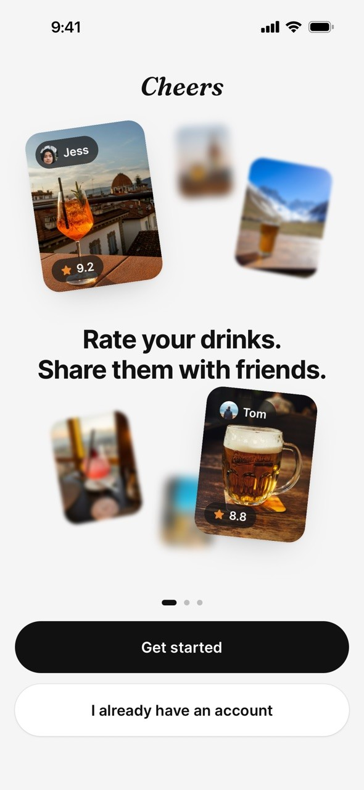
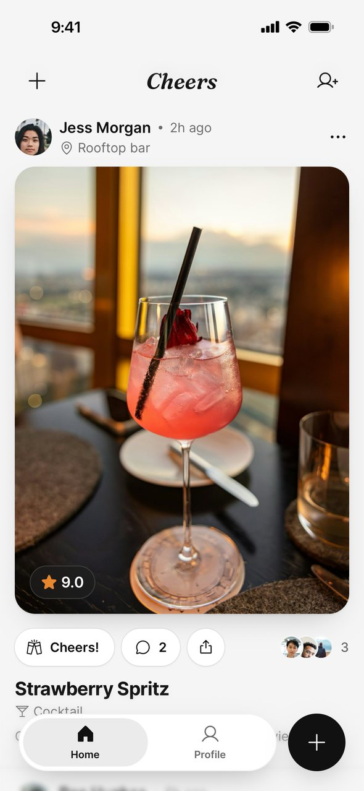
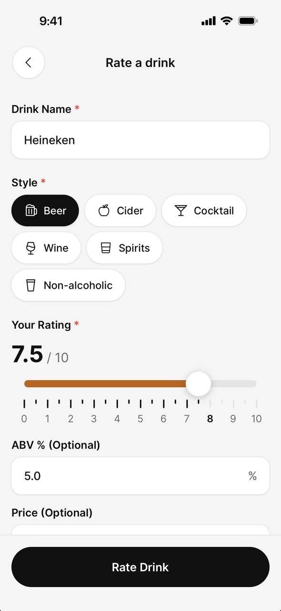
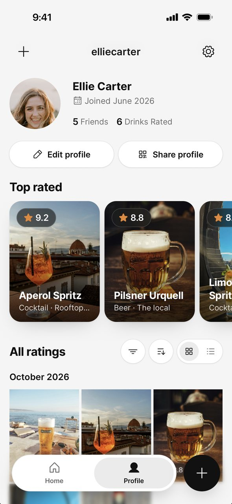
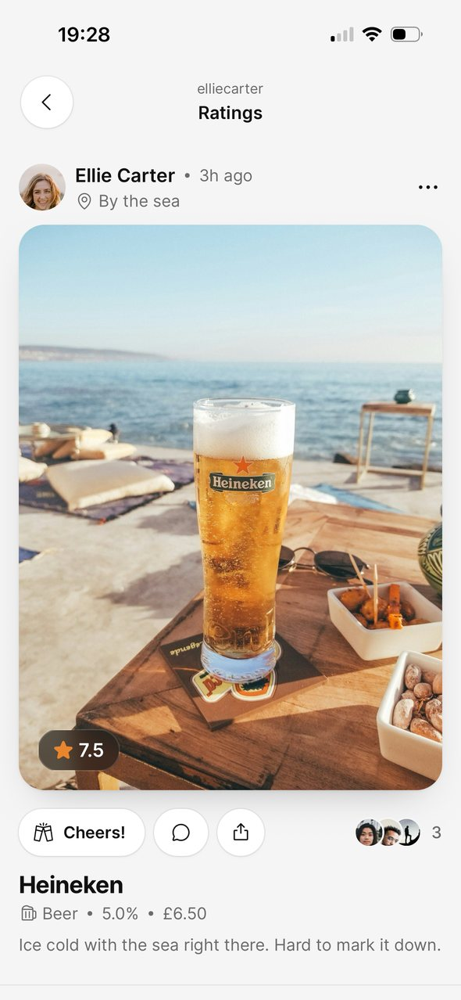
People try new drinks all the time and forget which ones they liked. Most drink apps are built around reviews from strangers, but people trust their friends more.
Personas, need statements and ideas, then app structure, wireframes, visual design and building the app.
A working app where you take a photo of a drink, rate it and see your friends' ratings. Next up is user testing.
Who it's for.
The app does two things: rating drinks and sharing them with friends. I created a persona for each.
These personas are based on my own assumptions rather than interviews, so I treated them as something to test later.
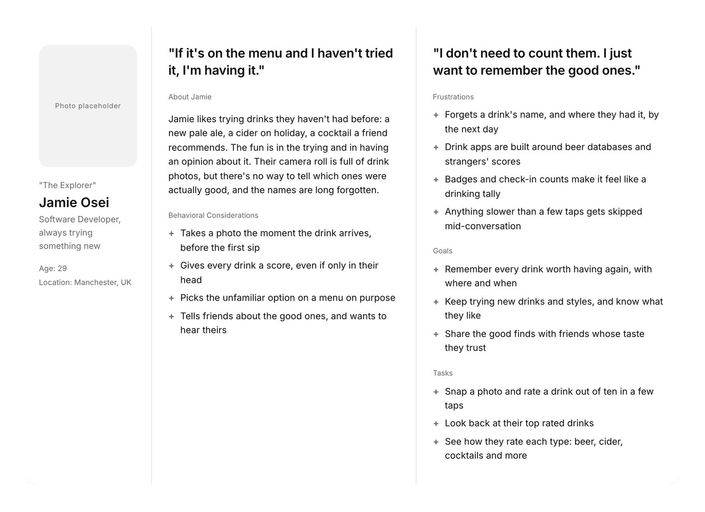
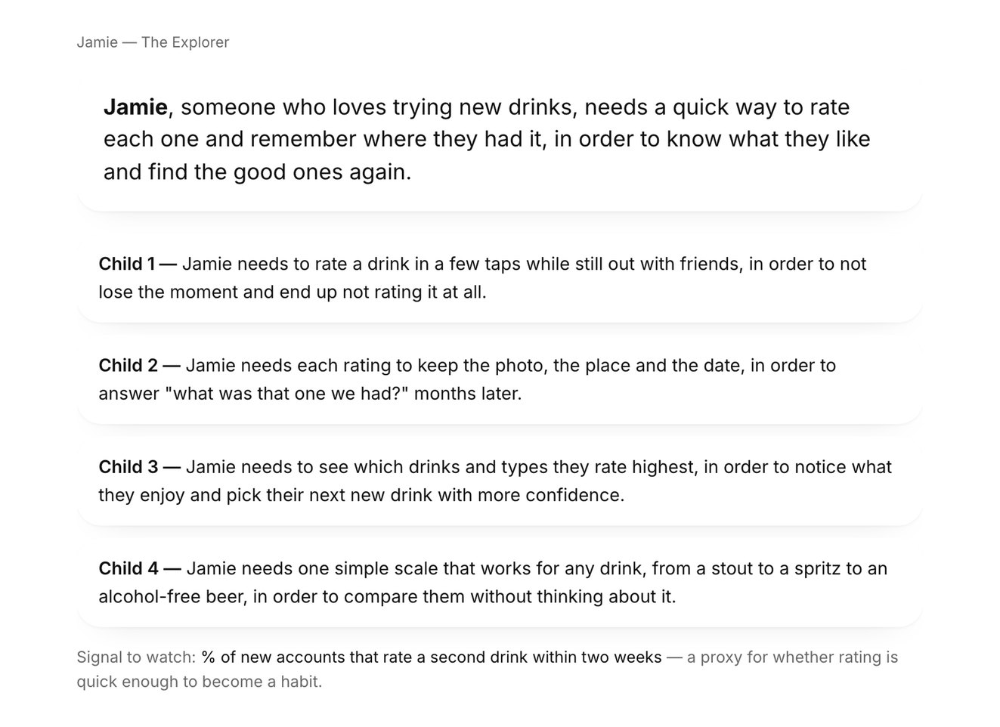
Turning needs into ideas.
I wrote a need statement for each persona and split it into smaller needs. I turned each one into a How Might We question, like “How might we make rating a drink quick enough to do mid-conversation?”. Then I brainstormed ideas for each question and grouped them into themes.
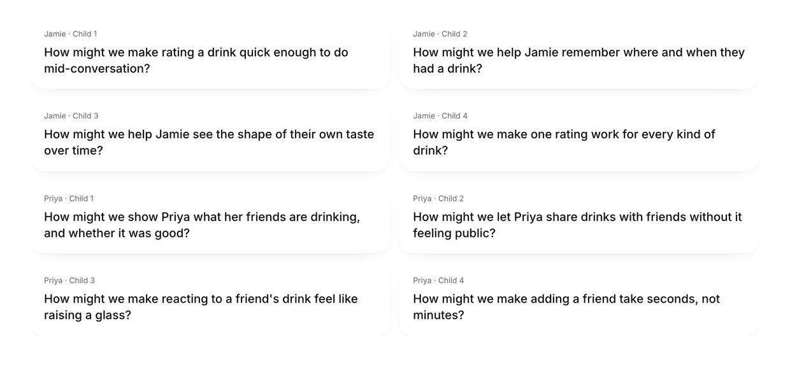
Key design decisions.
Because I was building the app as well as designing it, I also had to think about cost, Apple's rules and what was fair to users.
Start with the camera
- What I found
- Jamie already takes photos of new drinks, but won't bother with anything that takes more than a few taps.
- What I did
- Rating starts with a photo, then you add a name, type and score. I also designed an AI feature that reads the label and fills in the form for you to check. In testing it only saved a couple of fields and added cost and waiting time, so I turned it off for now.
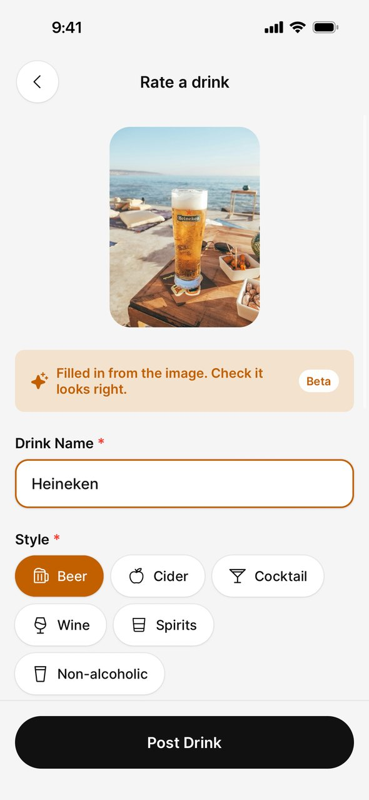
One score out of ten for every drink
- What I found
- Jamie drinks everything from stouts to spritzes, and already gives drinks a score out of ten with friends. Beer-only apps and five-star ratings didn't fit.
- What I did
- I used a slider out of ten that works the same for every type of drink, with half points so a 7.5 is possible. The score is shown on the photo wherever it appears, so you can see straight away whether it was good.
Friends only
- What I found
- Priya trusts her friends' taste more than reviews, and doesn't want her drinks to be public.
- What I did
- Both people have to accept a friend request, and the feed only shows friends. There's no public feed or algorithm. Instead of likes there's a “Cheers!” button, so Priya can react without having to post anything herself.
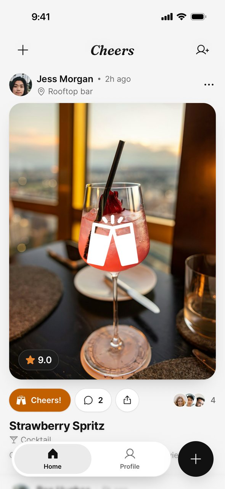
Making rating easy to reach.
I mapped out every screen. Home and Profile became tabs, and rating a drink got its own + button, because it's what people will do most.
I then mapped the two most important flows: signing up for the first time, and adding a friend.
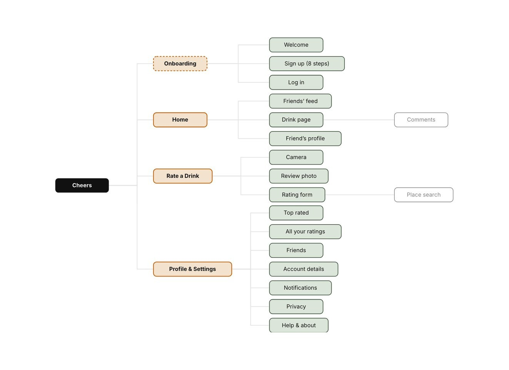
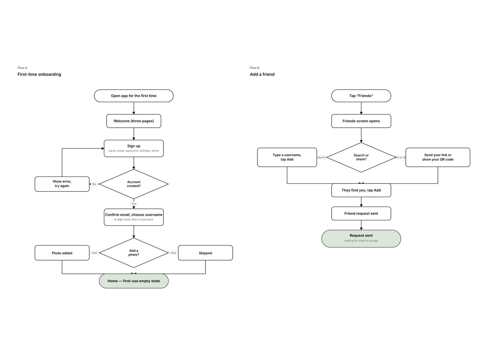
Wireframes first.
I wireframed each part of the app in greyscale before adding any visual design.
- Rating a drink takes five screens: camera, photo check, the form, an optional location, and the posted drink.
- After posting, you go back to the feed with your drink at the top, so you can see it was shared.
- Sign-up asks one question per screen, and the empty Home screen prompts you to add friends.
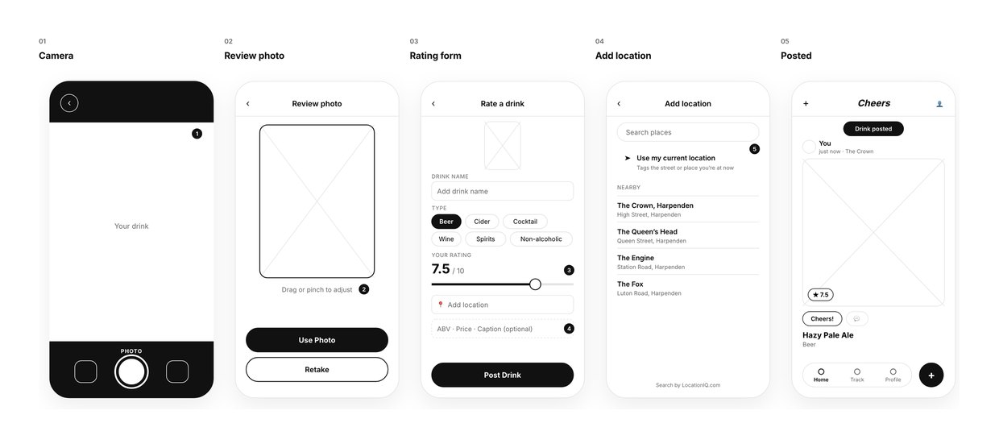
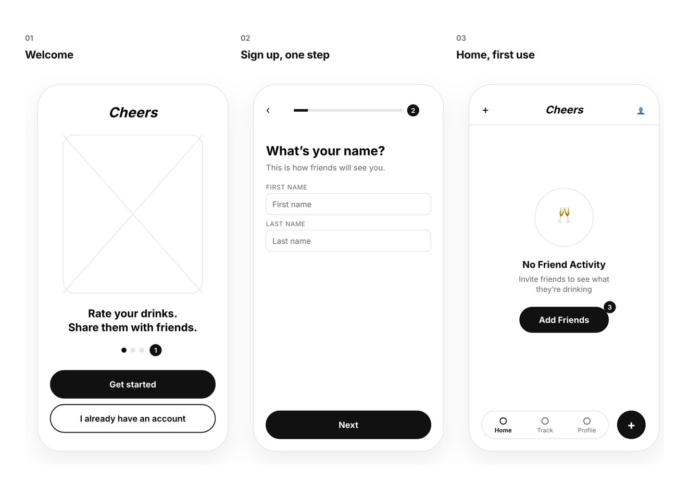
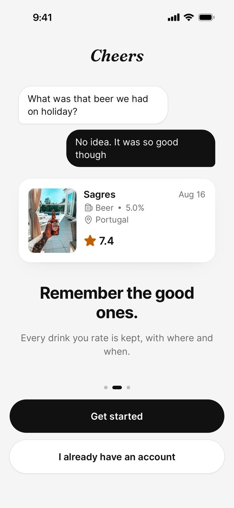
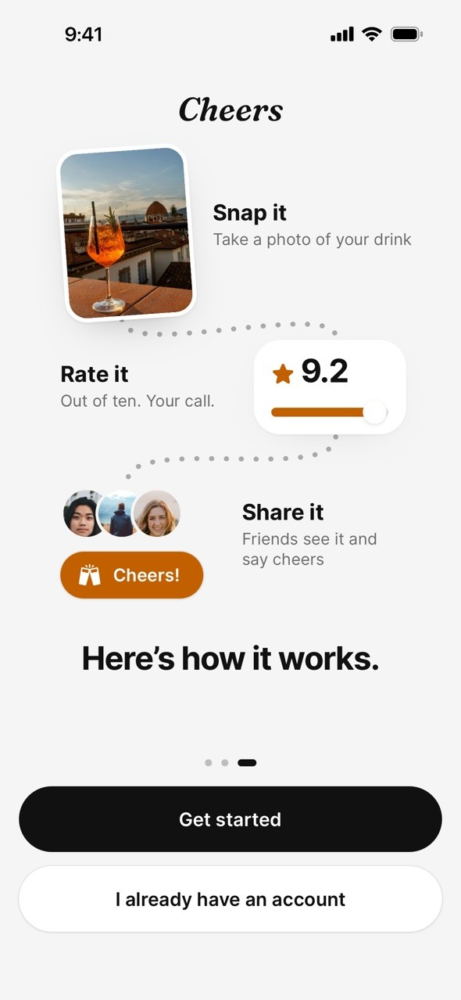
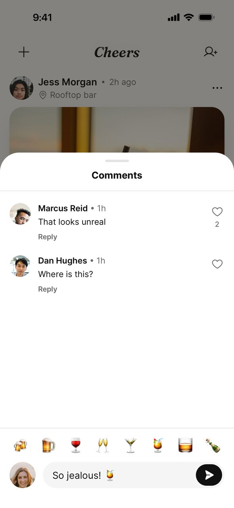
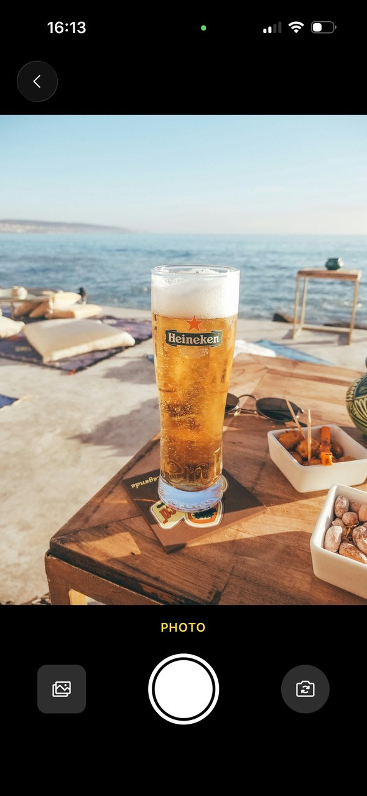
What I learned and what's next.
Building the app myself, with help from Claude Code, changed how I designed. I had to think beyond the screens, about things like Apple's rules on location search and whether the AI feature was worth what it cost.
The personas are still based on assumptions, so the next stage is user testing. I'll start with a few friends using the app, to see if rating is quick enough and whether seeing friends' ratings gets people trying new drinks.